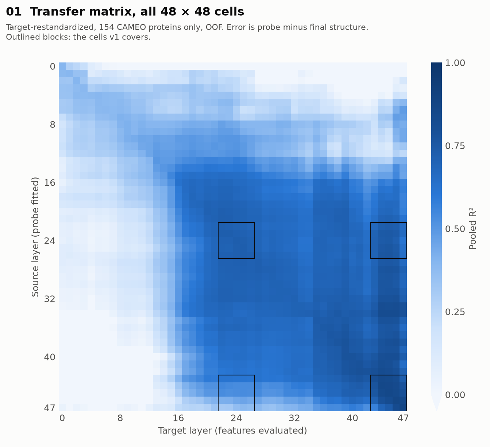
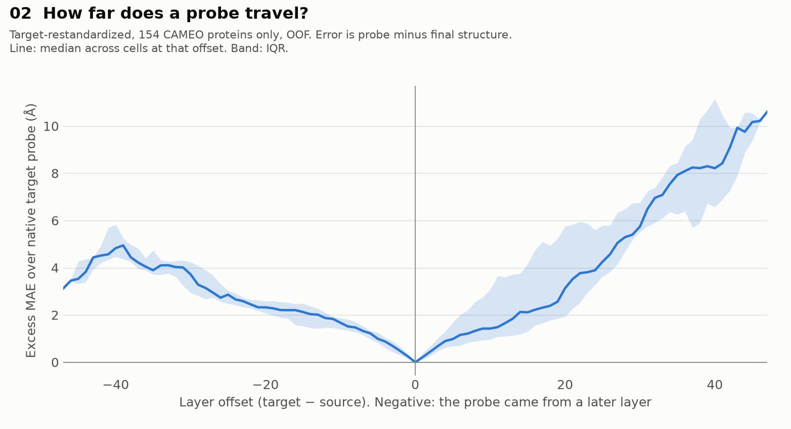
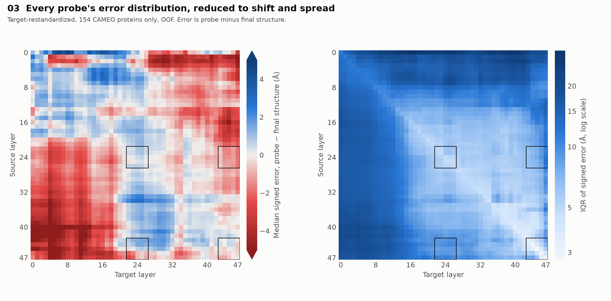
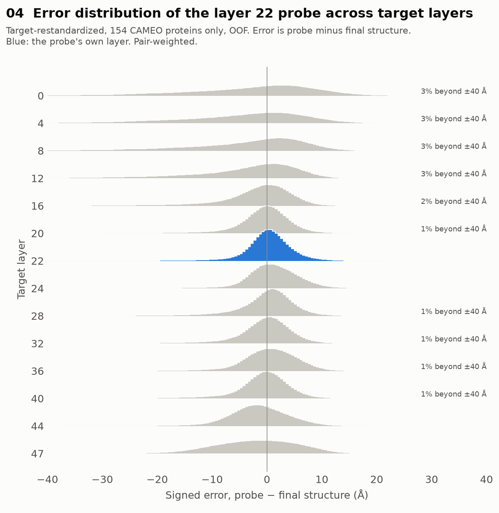
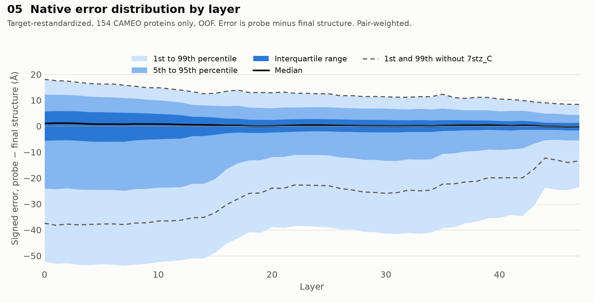
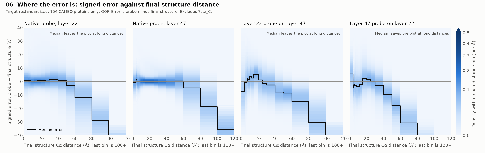
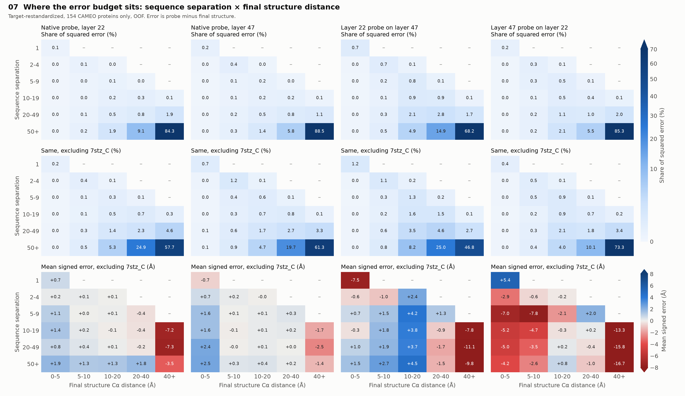
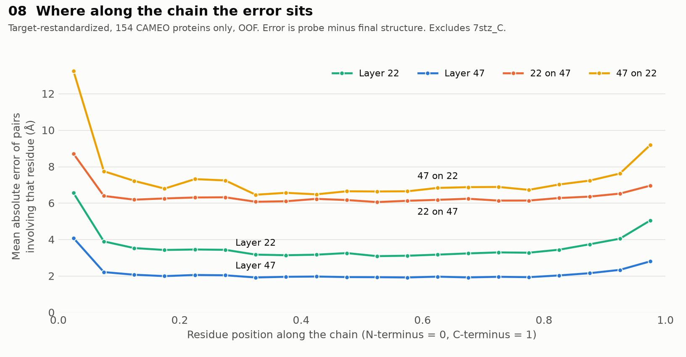
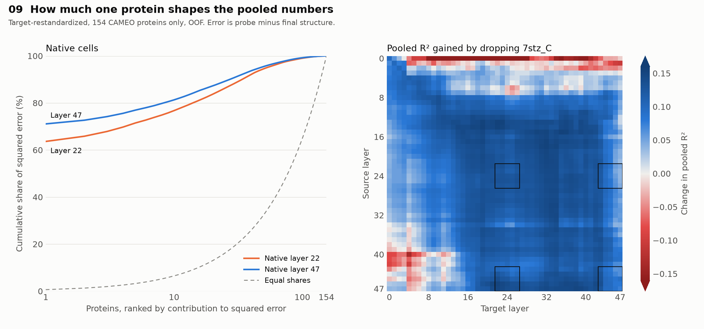

CAMEO probe transfer
All 240 frozen shared-OLS probes replayed across every pair of Evoformer layers, 2,304 cells in target_restandardized mode, with signed error recorded by sequence separation, final structure distance, protein, and chain position.
154 CAMEO proteins only. The ECOD inputs are unavailable, so this is a partial cohort and must be re-run on all 552 proteins when they return. Do not compare its pooled numbers with 552-protein tables.
Error is probe distance minus final structure distance, where the final structure is OpenFold's own prediction. It shows how far a probe reads from that structure.
analysis_status=complete, 792 of 792 checks. All 48 native cells match the producer per protein, and 1,293,600 per-protein statistics match the ten-layer run. Pooled, fold, and subgroup tables for this partial cohort have no outside reference; they rest on those per-protein checks.
What it shows
- Probes transfer well among layers 16 to 47, and poorly across the early-layer boundary.Median pooled R² excluding 7stz_C is 0.80 within layers 16 to 47. It falls to 0.12 for those probes on layers 0 to 13, and 0.30 for layers 0 to 12 probes on layers 16 to 47. The change is gradual: for probes from layers 22 to 47, it rises from 0.19 at target layer 12 to 0.58 at layer 16 and 0.78 at layer 20.
- Which direction is worse depends on the measure.At a 40-layer offset, a late probe on an early layer has the higher absolute MAE, 13.2 Å against 11.1 Å. Measured as excess over each target's own probe, an early probe on a late layer looks worse, 8.2 Å against 4.8 Å, because late layers start from a much lower error.
- Most squared error sits in pairs far apart in both sequence and space.At native layer 47, pairs with sequence separation 50+ and distance 40+ Å hold 88.5% of squared error, or 61.3% excluding 7stz_C.
- Long distances read short at every layer.At native layer 47, excluding 7stz_C, the median error is near zero up to 60 Å, then about −5 Å at 60 to 80 Å, −19 Å at 80 to 100 Å, and −36 Å beyond 100 Å.
- Transfer adds short-range error that native probes do not have.For sequence neighbours, the layer 22 probe on layer 47 reads 7.5 Å low on average, and the layer 47 probe on layer 22 reads 5.4 Å high. Native probes are within 0.7 Å. Since these pairs sit about 3.8 Å apart, a 7.5 Å shortfall means the probe reads a negative distance on average.
- Error rises at both ends of the chain, more at the N-terminus.At layer 47 the first 5% of the chain has an MAE of about 4.1 Å, against about 2.0 Å mid-chain. For the layer 47 probe on layer 22, it is about 13.2 Å against 6.6 Å.
- One protein still dominates the pooled numbers.7stz_C is the largest squared-error contributor in all 2,304 cells, at 15% to 75% of the total. At native layer 47 it takes pooled R² from 0.945 to 0.870. Median per-protein R² there is 0.942.
How far a probe transfers
Each cell is one source layer's probe read on one target layer's features.

Pooled R² for every cell, with 7stz_C included. The high block covers layers 16 to 47, and the outlined blocks mark what v1 measured.
01_transfer_pooled_r2_48x48.png
Excess MAE over the target layer's own probe. Read this with the absolute numbers above: the steeper right side reflects how low native error is at late layers.
02_transfer_offset_decay.png
Every probe's error distribution as shift and spread. Median error stays within about 1 Å through most of the late block, even where spread grows. Late probes read low on early layers.
03_error_median_and_iqr_48x48.png
The full distribution for the layer 22 probe across target layers. All 48 probes have a page like this in per_probe/.
Where the error is
Two native cells, and the two directions between them.

Native error at every layer. The median stays near zero while the negative tail runs much longer than the positive one. The dashed lines show how much of that tail is 7stz_C.
05_native_error_fan_by_layer.png
Signed error against final structure distance, excluding 7stz_C. All four cells read long distances short. The two transfers also bend away from zero under about 25 Å.
06_error_vs_final_structure_distance.png
The error budget by sequence separation and distance. The full fine-binned version, 13 by 17 strata for every cell, is in error_strata.csv.

Error along the chain, excluding 7stz_C. Flat through the middle, rising at both termini, and steepest at the N-terminus.
08_error_along_chain.pngAnomalous proteins
Pooled metrics weight pairs, so one long, elongated protein can dominate them.

7stz_C alone is about 64% of native squared error at layer 22 and 71% at layer 47. That share is larger than in the full cohort, where ECOD proteins dilute it. protein_anomalies.csv lists the top five proteins for every cell; after 7stz_C, the most frequent are 7o49_F and 7t24_A.